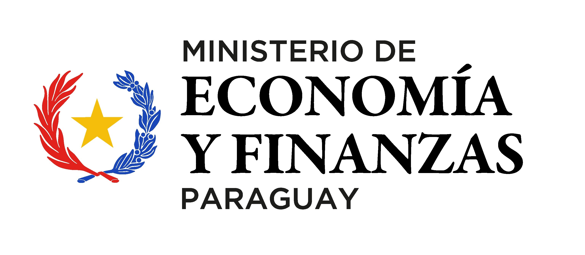
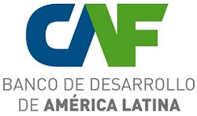
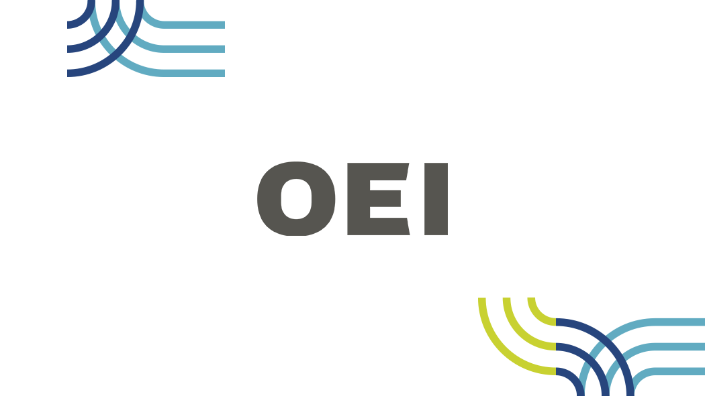

Worldwide Rebound Effects: A Multiregional Input–Output Analysis
Freire-González, J., Chen, Q., & Bordón-Lesme, M. (2026). Journal of Industrial Ecology.
View publicationBARA is an independent academic research and advisory practice based in Paraguay. It supports public institutions, organizations, and research partners through rigorous economic analysis, policy-oriented research, and technically grounded advisory work.



Bordón Academic Research Advisory (BARA) is an independent platform created to provide academically grounded research and advisory services. It is designed for institutions and organizations that require technically robust analysis with clear policy implications.
The practice supports work across applied economics and public policy, with a particular emphasis on energy economics, energy poverty, rebound effects, electricity systems, and quantitative policy analysis. Its work combines empirical methods, theoretical grounding, and institutional understanding.
BARA operates as a flexible research advisory platform, collaborating with researchers and professionals across complementary fields when required. The objective is to produce work that is methodologically consistent, analytically useful, and clearly communicated for decision-making.
BARA provides research and advisory support for institutions, organizations, and projects requiring rigorous economic analysis with practical policy relevance.
Applied research across economics and public policy, combining empirical analysis, academic literature, and institutional interpretation.
Support for public institutions and organizations in policy design, evaluation, strategy, and evidence-based decision-making.
Development, interpretation, and communication of datasets, indicators, and statistical outputs for policy and institutional analysis.
Preparation of research reports, policy briefs, advisory notes, working papers, and review-ready academic materials.
BARA’s research activity connects peer-reviewed academic work, working papers, and policy-oriented analysis, with a focus on energy economics, rebound effects, household energy demand, and energy poverty.
Freire-González, J., Chen, Q., & Bordón-Lesme, M. (2026). Journal of Industrial Ecology.
View publicationBordón-Lesme, M., Freire-González, J., & Padilla, E. (2022). Energy for Sustainable Development.
View publicationBordón-Lesme, M., Freire-González, J., & Padilla, E. (2022). Energy Efficiency.
View publicationBordón-Lesme, M. Working paper.
Bordón-Lesme, M. Working paper.
Bordón-Lesme, M., Blanco, G., Freire-González, J., & Padilla, E. Working paper.
Bordón-Lesme, M., Freire-González, J., & Padilla, E. Working paper.
Energy economics, electricity markets, electricity demand modeling, energy poverty, rebound effects, applied econometrics, input-output analysis, system dynamics, composite indicators, and public policy evaluation.
The research agenda is designed to connect academic methods with public policy needs. It emphasizes technically grounded analysis, transparent assumptions, and policy-relevant interpretation for institutional decision-making.
BARA’s research platform is connected to an international academic network in applied economics, energy economics, environmental policy, and sustainability research.
Research Scientist, Institute for Economic Analysis (IAE-CSIC) · Affiliated Professor, Barcelona School of Economics
Jaume Freire-González collaborates with BARA on research related to energy economics, environmental policy, rebound effects, and applied economic modelling.
He has held research positions at Harvard University and the University of Oxford, and has developed an international academic career focused on energy and climate change economics, water economics, environmental taxation, input-output analysis, econometrics, and computable general equilibrium models.
Professor of Applied Economics, Universitat Autònoma de Barcelona
Emilio Padilla Rosa is connected to BARA’s research agenda through previous co-authored research in energy and environmental economics.
His academic trajectory includes extensive work in ecological economics, energy economics, environmental policy, climate-related economic analysis, and applied economic research. His publication and citation record provide an important academic reference point for BARA’s research background.
BARA is led by Martín Bordón, whose professional work combines academic research, public policy advisory, and applied economic analysis.
Founded by Martín Bordón (Bordón-Lesme), economic researcher and policy advisor specializing in energy economics and public policy. His academic publications are indexed under the name Bordón-Lesme.
His work focuses on energy poverty, rebound effects, household energy demand, and electricity system analysis. He has published in peer-reviewed journals including Journal of Industrial Ecology, Energy Efficiency, and Energy for Sustainable Development.
For institutional inquiries, research collaboration, advisory work, or editorial verification.
BARA is an independent research and advisory platform. Academic publications by Martín Bordón are indexed under the name Martín Bordón-Lesme.